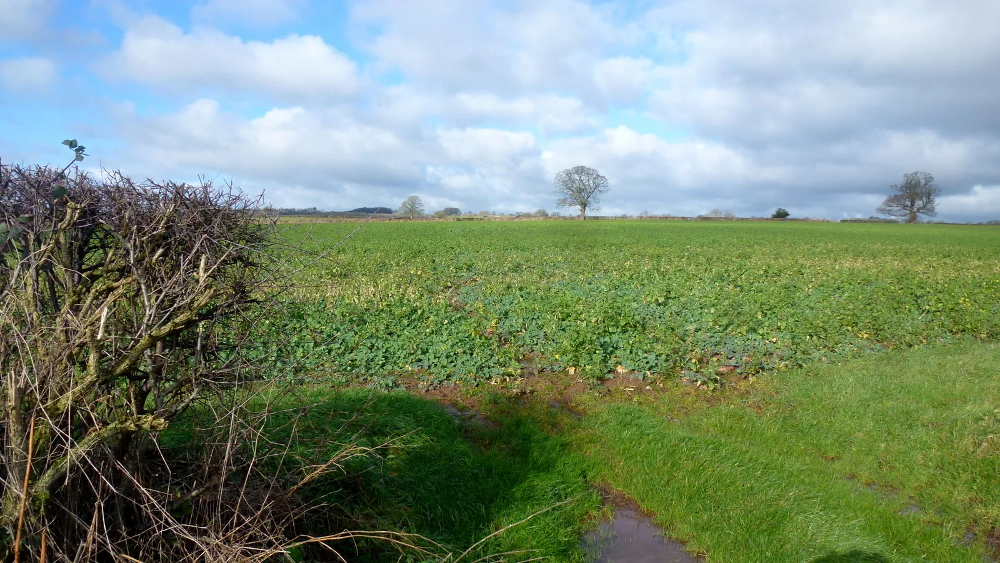

What we don’t know
597 of the numbers behind these plans are ones this project does not stand behind. Here they are.
Every measurement in the corpus carries a confidence tier. Most are recorded from a land-grant extension publication and checked. These are not: they are either estimated — a plausible figure nobody has confirmed against a source — or contested, where the sources disagree with each other. The planner still uses them, because a garden plan needs a number and refusing to plan is not more honest than planning with a stated estimate. What it will not do is let you believe they are measurements.
This list is generated from the corpus itself, so it cannot go stale: a number leaves this page the day it is verified, and a new estimate appears the day it is recorded.
Contested · 5
The sources disagree. Where a plan depends on one of these, the app says so at the point it matters rather than here.
- Common Bean nitrogen reaching neighbours the same season
- Corn smallest block that pollinates
- Pepper night temperature it stops setting fruit
- Tomato night temperature it stops setting fruit
- White Clover nitrogen reaching neighbours the same season
Estimated · 592
Plausible, unconfirmed, and used as a working figure until someone reads a source that settles it.
- Amaranth how many vines it can carry
- Amaranth sowing depth
- American Persimmon hardiness zone
- American Persimmon mature height
- American Persimmon mature spread
- American Persimmon feeder class
- American Persimmon frost tolerance
- American Persimmon casts shade
- American Persimmon ground coverage
- American Persimmon pollinator value
- American Persimmon root depth
- American Persimmon pollination
- American Persimmon bloom window
- Anise Hyssop hardiness zone
- Anise Hyssop mature height
- Anise Hyssop mature spread
- Anise Hyssop feeder class
- Anise Hyssop frost tolerance
- Anise Hyssop casts shade
- Anise Hyssop ground coverage
- Anise Hyssop pollinator value
- Anise Hyssop root depth
- Anise Hyssop light min
- Anise Hyssop bloom window
- Apple hardiness zone
- Apple how far the roots reach past the canopy
- Apple dwarf rootstock: mature height
- Apple dwarf rootstock: mature spread
- Apple ph range
- Apple dwarf rootstock: spacing in row
- Apple standard rootstock: spacing in row
- Apricot hardiness zone
- Apricot mature height
- Apricot mature spread
- Apricot feeder class
- Apricot frost tolerance
- Apricot casts shade
- Apricot ground coverage
- Apricot pollinator value
- Apricot root depth
- Artichoke hardiness zone
- Artichoke mature height
- Artichoke mature spread
- Artichoke spacing in row
- Artichoke feeder class
- Artichoke frost tolerance
- Artichoke years to bearing
- Artichoke root depth
- Artichoke casts shade
- Artichoke ground coverage
- Artichoke pollinator value
- Arugula mature height
- Arugula mature spread
- Arugula days between succession sowings
- Arugula light min
- Arugula sowing depth
- Asparagus hardiness zone
- Asparagus mature height
- Asparagus mature spread
- Asparagus spacing in row
- Asparagus ph range
- Asparagus feeder class
- Asparagus frost tolerance
- Asparagus ground coverage
- Asparagus pollinator value
- Asparagus casts shade
- Asparagus years to bearing
- Autumn Olive hardiness zone
- Basil sowing depth
- Beet conditiva: mature spread
- Beet cicla: mature spread
- Beet days between succession sowings
- Beet ph range
- Black Chokeberry hardiness zone
- Black Chokeberry mature height
- Black Chokeberry mature spread
- Black Chokeberry feeder class
- Black Chokeberry frost tolerance
- Black Chokeberry casts shade
- Black Chokeberry ground coverage
- Black Chokeberry pollinator value
- Black Chokeberry root depth
- Black Chokeberry light min
- Black Chokeberry pollination
- Black Chokeberry bloom window
- Blackberry hardiness zone
- Blackberry mature height
- Blackberry mature spread
- Blackberry ph range
- Blackberry root depth
- Blackberry feeder class
- Blackberry frost tolerance
- Blackberry pollinator value
- Blackberry ground coverage
- Blackberry bloom window
- Blackberry years to bearing
- Blackberry requires
- Blueberry bloom window
- Blueberry ph range
- Blueberry hardiness zone
- Blueberry mature height
- Blueberry mature spread
- Blueberry spacing in row
- Blueberry frost tolerance
- Blueberry feeder class
- Blueberry pollinator value
- Borage sowing depth
- Borage days to maturity
- Borage root depth
- Borage feeder class
- Borage ground coverage
- Borage frost tolerance
- Buckwheat mature height
- Buckwheat days to maturity
- Buckwheat feeder class
- Buckwheat frost tolerance
- Buckwheat casts shade
- Buckwheat ground coverage
- Buckwheat pollinator value
- Buckwheat root depth
- Buckwheat bloom window
- Butternut ph range
- Cabbage ph range
- Calendula days to maturity
- Calendula feeder class
- Calendula frost tolerance
- Calendula casts shade
- Calendula ground coverage
- Calendula pollinator value
- Calendula bloom window
- Calendula root depth
- Carrot days between succession sowings
- Carrot ph range
- Carrot nantes: mature height
- Carrot nantes: mature spread
- Carrot nantes: days to maturity
- Carrot danvers: mature height
- Carrot danvers: mature spread
- Carrot danvers: days to maturity
- Carrot chantenay: mature height
- Carrot chantenay: mature spread
- Carrot chantenay: days to maturity
- Carrot imperator: mature height
- Carrot imperator: mature spread
- Carrot imperator: days to maturity
- Celery days to maturity
- Celery mature spread
- Celery ph range
- Cereal Rye days to maturity
- Cereal Rye feeder class
- Cereal Rye frost tolerance
- Cereal Rye casts shade
- Cereal Rye ground coverage
- Cereal Rye pollinator value
- Cereal Rye root depth
- Chamomile hardiness zone
- Chamomile mature height
- Chamomile feeder class
- Chamomile frost tolerance
- Chamomile casts shade
- Chamomile ground coverage
- Chamomile pollinator value
- Chamomile root depth
- Chives hardiness zone
- Cilantro bloom window
- Cilantro temperature threshold
- Cilantro days between succession sowings
- Cilantro sowing depth
- Common Bean nitrogen fixed per season
- Common Bean days between succession sowings
- Common Bean ph range
- Corn growing-degree days to maturity
- Corn how many vines it can carry
- Corn ph range
- Corn popcorn: days to maturity
- Corn popcorn: spacing in row
- Cosmos days to maturity
- Cosmos spacing in row
- Cosmos frost tolerance
- Cosmos root depth
- Cosmos feeder class
- Cosmos ground coverage
- Cowpea mature spread
- Cowpea ph range
- Crimson Clover bloom window
- Crocus root depth
- Crocus feeder class
- Crocus ground coverage
- Cucumber bloom window
- Cucumber vining: mature spread
- Cucumber bush: mature spread
- Cucumber ph range
- Currant hardiness zone
- Currant mature height
- Currant mature spread
- Currant spacing in row
- Currant feeder class
- Currant frost tolerance
- Currant ground coverage
- Currant pollinator value
- Currant years to bearing
- Currant red currant: hardiness zone
- Currant black currant: hardiness zone
- Currant gooseberry: hardiness zone
- Currant black currant: mature height
- Currant black currant: mature spread
- Daffodil hardiness zone
- Dill sowing depth
- Edamame mature height
- Edamame mature spread
- Edamame spacing in row
- Eggplant ph range
- Eggplant sowing depth
- Eggplant standard: mature height
- Eggplant standard: mature spread
- Eggplant standard: days to maturity
- Eggplant italian: mature height
- Eggplant italian: mature spread
- Eggplant italian: days to maturity
- Eggplant asian: mature height
- Eggplant asian: mature spread
- Eggplant asian: days to maturity
- Eggplant dwarf: mature height
- Eggplant dwarf: mature spread
- Eggplant dwarf: days to maturity
- Elderberry hardiness zone
- Elderberry mature height
- Elderberry mature spread
- Elderberry feeder class
- Elderberry frost tolerance
- Elderberry casts shade
- Elderberry ground coverage
- Elderberry pollinator value
- Elderberry root depth
- Endive days to maturity
- Endive mature height
- Endive mature spread
- Endive light min
- Endive frost tolerance
- Endive days between succession sowings
- Endive ph range
- False Indigo Bush bloom window
- Fava Bean nitrogen fixed per season
- Fennel bloom window
- Fennel hardiness zone
- Fig hardiness zone
- Fig mature height
- Fig mature spread
- Fig spacing in row
- Fig feeder class
- Fig ph range
- Fig frost tolerance
- Fig ground coverage
- Fig pollinator value
- Fig casts shade
- Fig years to bearing
- French Marigold sowing depth
- Garlic hardiness zone
- Garlic hardneck: mature height
- Garlic hardneck: mature spread
- Garlic softneck: mature height
- Garlic softneck: mature spread
- Grape hardiness zone
- Grape mature spread
- Grape spacing in row
- Grape root depth
- Grape feeder class
- Grape ph range
- Grape frost tolerance
- Grape ground coverage
- Grape pollinator value
- Grape casts shade
- Grape years to bearing
- Grape american: hardiness zone
- Grape european: hardiness zone
- Grape european: ph range
- Hairy Vetch days to maturity
- Hairy Vetch root depth
- Hairy Vetch frost tolerance
- Hairy Vetch casts shade
- Hairy Vetch ground coverage
- Hairy Vetch pollinator value
- Hairy Vetch bloom window
- Hardy Kiwi hardiness zone
- Hardy Kiwi mature height
- Hardy Kiwi mature spread
- Hardy Kiwi feeder class
- Hardy Kiwi frost tolerance
- Hardy Kiwi casts shade
- Hardy Kiwi ground coverage
- Hardy Kiwi pollinator value
- Hardy Kiwi root depth
- Hardy Kiwi pollination
- Hardy Kiwi bloom window
- Honeyberry hardiness zone
- Honeyberry mature height
- Honeyberry mature spread
- Honeyberry feeder class
- Honeyberry frost tolerance
- Honeyberry casts shade
- Honeyberry ground coverage
- Honeyberry pollinator value
- Honeyberry root depth
- Honeyberry light min
- Honeyberry ph range
- Honeyberry pollination
- Honeyberry bloom window
- Horseradish mature height
- Horseradish mature spread
- Horseradish spacing in row
- Horseradish days to maturity
- Horseradish frost tolerance
- Horseradish feeder class
- Horseradish root depth
- Horseradish casts shade
- Horseradish ground coverage
- Horseradish pollinator value
- Lacy Phacelia sowing depth
- Lavender hardiness zone
- Lavender mature height
- Lavender mature spread
- Lavender feeder class
- Lavender frost tolerance
- Lavender casts shade
- Lavender ground coverage
- Lavender pollinator value
- Lavender root depth
- Leek ph range
- Lemon Balm hardiness zone
- Lemon Balm mature spread
- Lettuce days between succession sowings
- Lettuce ph range
- Lettuce looseleaf: mature height
- Lettuce looseleaf: mature spread
- Lettuce looseleaf: days to maturity
- Lettuce butterhead: mature height
- Lettuce butterhead: mature spread
- Lettuce butterhead: days to maturity
- Lettuce romaine: mature height
- Lettuce romaine: mature spread
- Lettuce romaine: days to maturity
- Lettuce crisphead: mature height
- Lettuce crisphead: mature spread
- Lettuce crisphead: days to maturity
- Lima Bean bush: mature height
- Lima Bean bush: mature spread
- Lima Bean pole: mature height
- Lima Bean pole: mature spread
- Lima Bean bush: days to maturity
- Lima Bean pole: days to maturity
- Lima Bean ph range
- Lovage hardiness zone
- Lovage mature height
- Lovage mature spread
- Lovage feeder class
- Lovage frost tolerance
- Lovage casts shade
- Lovage ground coverage
- Lovage pollinator value
- Lovage root depth
- Marjoram hardiness zone
- Marjoram mature height
- Marjoram mature spread
- Marjoram feeder class
- Marjoram frost tolerance
- Marjoram casts shade
- Marjoram ground coverage
- Marjoram pollinator value
- Marjoram root depth
- Melon bloom window
- Melon mature spread
- Melon ph range
- Mustard Greens mature height
- Mustard Greens mature spread
- Mustard Greens spacing in row
- Mustard Greens days between succession sowings
- Mustard Greens light min
- Mustard Greens sowing depth
- Nasturtium spacing in row
- Nasturtium days to maturity
- Nasturtium root depth
- Nasturtium feeder class
- Nasturtium ground coverage
- Nasturtium frost tolerance
- Oats days to maturity
- Oats feeder class
- Oats frost tolerance
- Oats casts shade
- Oats ground coverage
- Oats pollinator value
- Oats root depth
- Okra mature height
- Okra ph range
- Onion shallot: days to maturity
- Onion shallot: mature height
- Onion shallot: mature spread
- Onion ph range
- Onion sowing depth
- Oregano hardiness zone
- Parsley days to maturity
- Parsley ph range
- Parsley sowing depth
- Parsnip days to maturity
- Parsnip ph range
- Pea ph range
- Peach hardiness zone
- Peach how far the roots reach past the canopy
- Peach mature spread
- Peach genetic dwarf: mature height
- Peach genetic dwarf: mature spread
- Peach ph range
- Pear hardiness zone
- Pear how far the roots reach past the canopy
- Pear ph range
- Pepper ph range
- Pepper sowing depth
- Plum hardiness zone
- Plum how far the roots reach past the canopy
- Plum mature spread
- Plum dwarf rootstock: mature height
- Plum dwarf rootstock: mature spread
- Plum ph range
- Potato ph range
- Potato first early: mature height
- Potato first early: mature spread
- Potato first early: days to maturity
- Potato second early: mature height
- Potato second early: mature spread
- Potato second early: days to maturity
- Potato maincrop: mature height
- Potato maincrop: mature spread
- Potato maincrop: days to maturity
- Purple Coneflower hardiness zone
- Purple Coneflower mature height
- Purple Coneflower mature spread
- Purple Coneflower feeder class
- Purple Coneflower frost tolerance
- Purple Coneflower casts shade
- Purple Coneflower ground coverage
- Purple Coneflower pollinator value
- Purple Coneflower bloom window
- Purple Coneflower root depth
- Quince hardiness zone
- Quince mature height
- Quince mature spread
- Quince feeder class
- Quince frost tolerance
- Quince casts shade
- Quince ground coverage
- Quince pollinator value
- Quince root depth
- Quince pollination
- Quince bloom window
- Radish mature spread
- Radish days between succession sowings
- Radish ph range
- Red Mulberry hardiness zone
- Red Mulberry mature height
- Red Mulberry mature spread
- Red Mulberry feeder class
- Red Mulberry frost tolerance
- Red Mulberry casts shade
- Red Mulberry ground coverage
- Red Mulberry pollinator value
- Red Mulberry root depth
- Red Mulberry pollination
- Red Raspberry hardiness zone
- Red Raspberry mature spread
- Red Raspberry ph range
- Rhubarb hardiness zone
- Rhubarb mature height
- Rhubarb mature spread
- Rhubarb spacing in row
- Rhubarb feeder class
- Rhubarb frost tolerance
- Rhubarb ground coverage
- Rhubarb pollinator value
- Rhubarb casts shade
- Rhubarb years to bearing
- Rocky Mountain Bee Plant days to maturity
- Rocky Mountain Bee Plant sowing depth
- Rosemary bloom window
- Rosemary hardiness zone
- Runner Bean mature spread
- Runner Bean ph range
- Russian Comfrey hardiness zone
- Russian Comfrey potassium in its leaf litter
- Rutabaga mature spread
- Rutabaga ph range
- Scallion mature spread
- Scallion ph range
- Sorghum spacing in row
- Sorghum root depth
- Sorghum feeder class
- Sorghum broomcorn: mature spread
- Sorrel hardiness zone
- Sorrel mature height
- Sorrel mature spread
- Sorrel spacing in row
- Sorrel frost tolerance
- Sorrel years to bearing
- Sorrel root depth
- Sorrel feeder class
- Sorrel casts shade
- Sorrel ground coverage
- Sorrel pollinator value
- Sour Cherry hardiness zone
- Sour Cherry mature height
- Sour Cherry mature spread
- Sour Cherry ph range
- Sour Cherry root depth
- Sour Cherry feeder class
- Sour Cherry frost tolerance
- Sour Cherry pollinator value
- Sour Cherry bloom window
- Spearmint hardiness zone
- Spearmint mature spread
- Spinach mature spread
- Spinach days between succession sowings
- Spinach ph range
- Spinach temperature threshold
- Strawberry hardiness zone
- Strawberry mature spread
- Strawberry ph range
- Summer Savory mature height
- Summer Savory mature spread
- Summer Savory feeder class
- Summer Savory frost tolerance
- Summer Savory days to maturity
- Summer Savory casts shade
- Summer Savory ground coverage
- Summer Savory pollinator value
- Summer Savory root depth
- Summer Savory light min
- Summer Savory bloom window
- Summer Squash pumpkin: mature spread
- Summer Squash pumpkin: mature height
- Summer Squash ph range
- Summer Squash bloom window
- Sunflower how many vines it can carry
- Sweet Alyssum days to maturity
- Sweet Alyssum feeder class
- Sweet Alyssum frost tolerance
- Sweet Alyssum casts shade
- Sweet Alyssum ground coverage
- Sweet Alyssum pollinator value
- Sweet Alyssum bloom window
- Sweet Alyssum root depth
- Sweet Cherry hardiness zone
- Sweet Cherry mature height
- Sweet Cherry mature spread
- Sweet Cherry feeder class
- Sweet Cherry frost tolerance
- Sweet Cherry casts shade
- Sweet Cherry ground coverage
- Sweet Cherry pollinator value
- Sweet Cherry root depth
- Sweet Potato mature spread
- Sweet Potato ph range
- Tomatillo bloom window
- Tomatillo sowing depth
- Tomato ph range
- Tomato sowing depth
- Turnip mature spread
- Turnip bok choy: days to maturity
- Turnip bok choy: mature spread
- Turnip napa cabbage: mature height
- Turnip napa cabbage: mature spread
- Turnip ph range
- Watermelon bloom window
- Watermelon mature spread
- Watermelon ph range
- White Clover nitrogen fixed per season
- Winter Squash bloom window
- Winter Squash mature spread
- Winter Squash ph range
- Winter Squash buttercup kabocha: mature height
- Winter Squash buttercup kabocha: mature spread
- Winter Squash buttercup kabocha: days to maturity
- Winter Squash buttercup kabocha: spacing in row
- Winter Squash hubbard: mature height
- Winter Squash hubbard: mature spread
- Winter Squash hubbard: days to maturity
- Winter Squash giant: mature height
- Winter Squash giant: mature spread
- Winter Squash giant: days to maturity
- Winter Squash giant: spacing in row
- Yarrow hardiness zone
- Zinnia frost tolerance
- Zinnia root depth
- Zinnia feeder class
- Zinnia ground coverage
The other honest edge: questions this library cannot answer yet → - the ones with no graded answer at all.